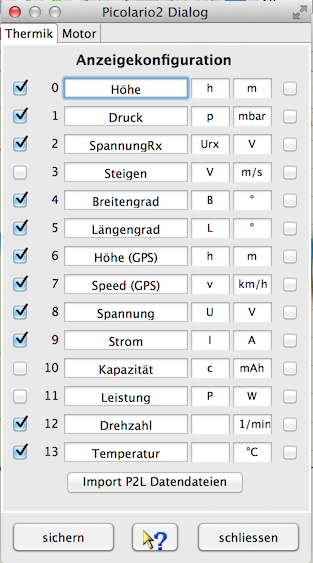

Der gezeigte Gerätedialog dient zur Konfiguration der Anzeige der ausgelesenen Daten. Es können die Messwertnamen und Messwertsymbole angepasst werden. Die Messwerteinheiten sind ebenfalls änderbar, es ist aber wenig sinnvoll hier etwas anzufassen, wenn nicht auch ein passender Messwertfaktor angelegt wird. Nicht selektierte Messgrößen erscheinen dadurch nicht in der grafischen Anzeige. Dadurch wird die Übersichtlichkeit stark erhöht. Kurven, wie Längengrad und Breitengrad, die zweidimensional dargestellt wenig Sinn ergeben, können ausgeblendet werden. Über einen Dateiauswahldialog, erreichbar über "Import P2L Datendatei", können auch neue Dateien eingelesen werden. Kurven die keine sinnvollen Daten enthalten werden automatisch ausgeblendet. Ist z.B. kein GPS angeschlossen, werden die GPS relevanten Daten nicht zur Anzeige angeboten. Sind GPS-Daten vorhanden, werden die dadurch resultierenden Exportmöglichkeiten eingeblendet, und es können z. B. Google Earth-Dateien (KMZ) exportiert, bzw. direkt angezeigt werden. Nähere Beschreibung dazu siehe Toolbar -> Google Earth.

Am rechten Rand der Anzeigenkonfiguration befindet sich ein zusätzlicher Schalter, der eine halbautomatische Synchronisation der Skalen ermöglicht. Wird hier selektiert, wird auf Namensgleichheit geprüft, bei entsprechender Übereinstimmung wird in der Gerätekonfigurationsdatei bei den Messwerten die entsprechende Eigenschaft eingesetzt. Funktioniert das nicht automatisch, bleibt immer noch die Möglichkeit, das manuell über den Geratekonfigurationseditor einzustellen. Durch Skalensynchronisation wird die verfügbare Anzeigefläche vergrößert und es können Messwertaufnehmer direkt verglichen werden ohne den Kurvenvergleich zu benutzen.
Hinweis: Werden Messwertnamen geändert, führt das in der Gerätekonfigurationsdatei zu einer Änderung. Ändert sich in einer späteren DataExplorer-Version das Gerätekonfigurationsdateischema (DeviceProperties_Vxy.xsd), wird eine Sicherung aller vorhandenen Gerätekonfigurationsdateien angelegt (Devices_Vxy-1) und geht nicht verloren. Die veraltete Gerätekonfigurationsdatei kann dann als Vorlage für die neue verwendet werden.